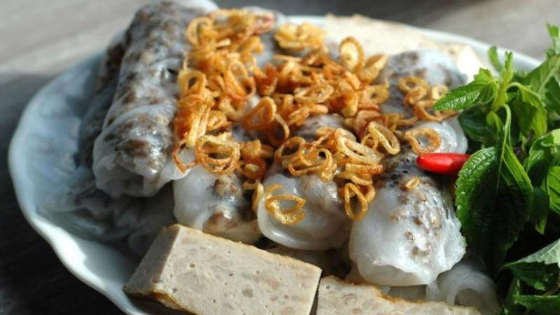

Odin Recipes

Banh cuon VietNam
Description
Banh cuon is a traditional Vietnamese dish made with thin, steamed rice flour sheets.
The rolled banh cuon are filled with a savory mixture of ground pork, mushrooms, and diced shallots, and served with a flavorful dipping sauce.
Ingredients
- 500 grams of rice flour
- 500 grams of minced pork
- 300 grams of sausage
- 100 grams of wood ear mushrooms
- 100 grams of purple onions
- 1 cup warm milk (110 degrees F/45 degrees C)
- 1 white onion
- Seasoning: fish sauce, salt, sugar, black pepper, Sichuan pepper, chili, garlic
Step
- Pour 1 liter of water into the rice flour and stir evenly. Add 1/4 teaspoon of salt and let the flour expand for 30 minutes.
- Rinse the minced pork, drain it, and slice it into small pieces. Use a knife to finely chop the purple onions. Mix 1 tablespoon of purple onions into the minced pork and marinate.
- Peel the white onion, rinse it, and slice it into small pieces. Soak the wood ear mushrooms in water, cut off the stems, and slice them into thin strips.
- Heat a pan over the stove and add 2 tablespoons of cooking oil. Stir-fry the remaining purple onions, then add the marinated minced pork to the pan. Add the sliced white onions and stir-fry until they are cooked. Add 1 tablespoon of fish sauce, 2 teaspoons of Sichuan pepper, and 1 teaspoon of sugar to the pan and stir evenly. When the liquid has evaporated, add the finely chopped wood ear mushrooms to the pan and stir evenly again. Add 1 teaspoon of black pepper before turning off the stove.